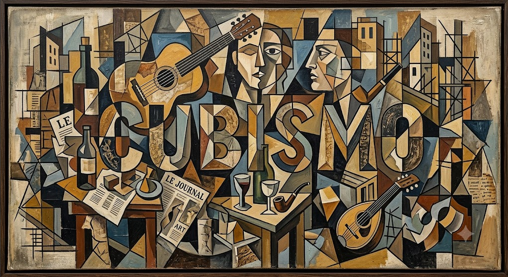
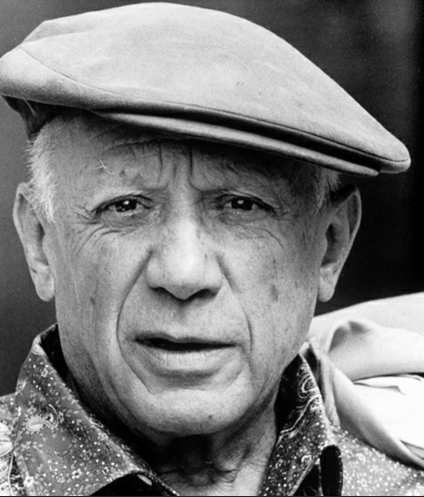
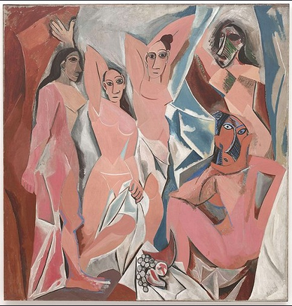
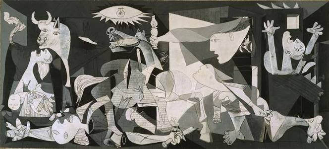
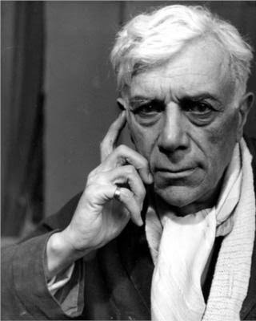
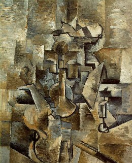

O Cubismo foi um movimento artístico criado no início do século XX por Pablo Picasso e Georges Braque. Ele surgiu como uma ruptura com a arte tradicional, que buscava representar a realidade usando perspectiva e profundidade. Os artistas cubistas passaram a representar objetos e figuras através de formas geométricas e diferentes pontos de vista ao mesmo tempo. Em vez de apenas copiar aquilo que os olhos viam, buscavam mostrar a estrutura dos objetos, fragmentando e reorganizando suas formas. Influenciado pelas ideias de Paul Cézanne e pela arte africana e ibérica, o Cubismo rompeu com as técnicas tradicionais da pintura e se tornou um dos principais movimentos da arte moderna.
Cubismo Cezanniano (1907–1909) Foi a primeira fase do movimento, influenciada por Paul Cézanne. Características: - Simplificação dos objetos em formas geométricas. - Uso de cubos, cilindros e cones. - Primeiras experiências com múltiplos pontos de vista. Cubismo Analítico (1909–1912) Foi a fase mais complexa do Cubismo. Características: - Fragmentação dos objetos em vários planos. - Diferentes ângulos ao mesmo tempo. - Uso de cores neutras. Cubismo Sintético (1912–1914) Foi uma fase mais simples. Características: - Formas mais reconhecíveis. - Uso de colagens. - Maior liberdade de cores.

Pablo Picasso foi um pintor, escultor e desenhista espanhol considerado um dos artistas mais importantes da história da arte. Ele buscava novas formas de representar a realidade, rompendo com a ideia tradicional de perspectiva e criando uma nova linguagem visual. LES DEMOISELLES D'AVIGNON (1907)

Essa obra foi criada durante um período de experimentação artística. A pintura mostra cinco mulheres com corpos e rostos distorcidos por formas geométricas. Picasso foi influenciado por Cézanne e pela arte africana. A obra rompeu com os padrões tradicionais de beleza e perspectiva, sendo considerada uma das origens do Cubismo. GUERNICA (1937)

Guernica foi criada durante a Guerra Civil Espanhola. Picasso utilizou a obra como uma crítica contra a guerra e a violência. A pintura mostra o sofrimento das vítimas através de figuras fragmentadas. O uso do preto, branco e cinza aumenta o clima de destruição.

Georges Braque foi um pintor francês e um dos criadores do Cubismo junto com Picasso. Braque tinha maior interesse na estrutura dos objetos e em como eles poderiam ser reconstruídos na pintura. VIOLIN AND CANDLESTICK (1910)

Essa obra é um exemplo do Cubismo Analítico. Braque representa um violino e um castiçal através de formas geométricas fragmentadas e vários planos. A obra mostra diferentes ângulos do objeto ao mesmo tempo, fazendo o observador participar da interpretação da imagem.